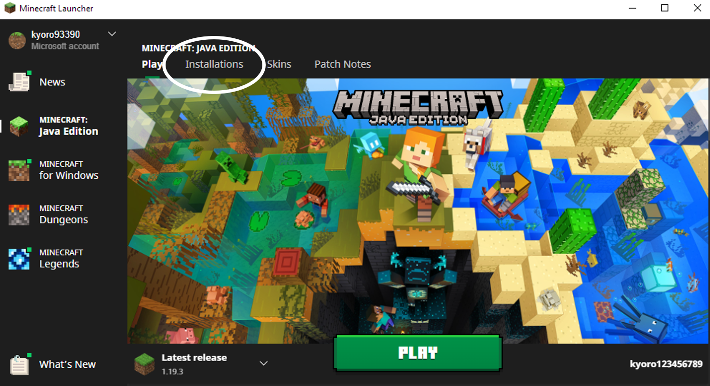
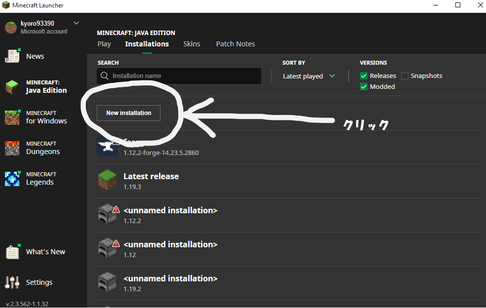
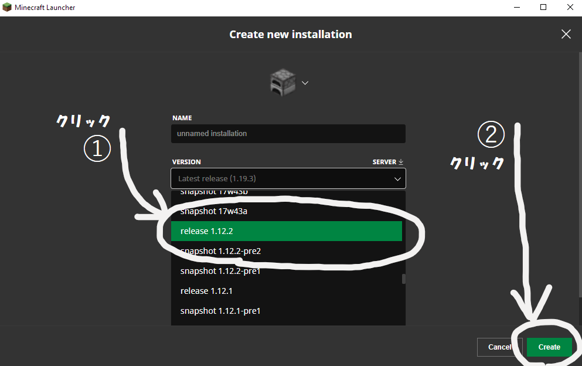
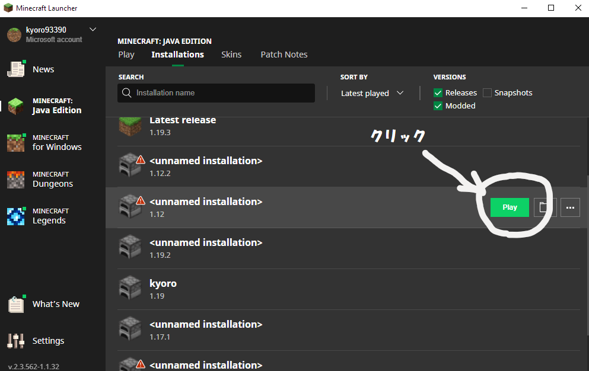
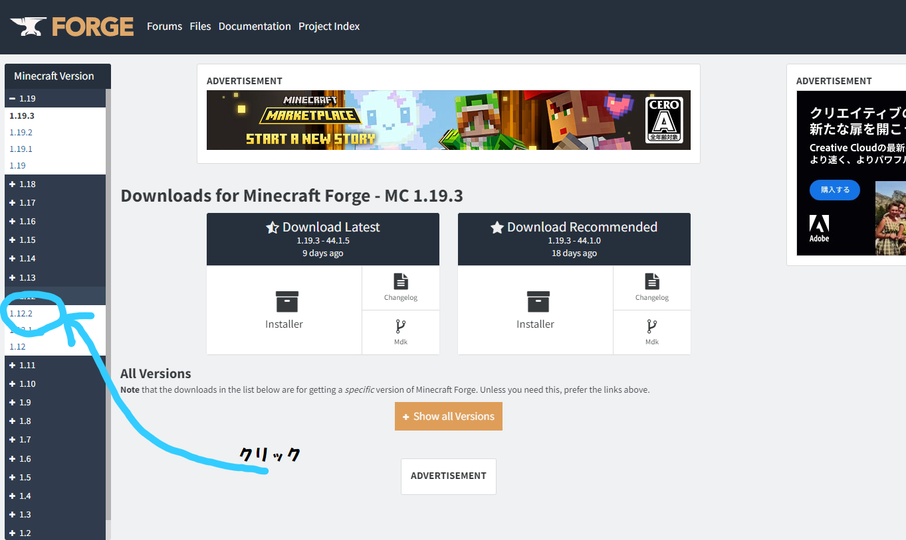

「Forge」導入前にMinecraft1.12.2を起動します。
Minecraft Launcherを開き、「Installations」をクリック

「New Installation」をクリック

「Version」から「release1.12.2」を選択し、右下のCreateを選択します。

作成した「1.12.2」にカーソルを合わせMinecraftを起動します。

「1.12.2」版のMinecraftが起動したことを確認し、ゲームを終了します。
「Forge」とは、MinecraftにModを導入するためのソフトウェアです。 Forgeを導入するには、以下の手順を実行します。
「Minecraft Forge」のサイト（https://files.minecraftforge.net/）にアクセスして、1.12.2版「Minecraft Forge Installerをダウンロードします。

「forge-1.12.2-14.23.5.2847-installer.jar」を起動し、画面の指示に従ってインストールを進めます。
インストールが完了すると、Minecraftのランチャーが起動します。「Minecraft Forge」がインストールされていることを確認したら、「Play」をクリックしてMinecraftを起動します。
Minecraftを起動したら、「MODS」タブをクリックして、Modが正常に導入されているか確認します。
以上で、「Forge」の導入は完了です。
「黄昏の森」Modのサイト（https://www.curseforge.com/minecraft/mc-mods/the-twilight-forest）にアクセスして、「黄昏の森」Modをダウンロードします。
ダウンロードした「黄昏の森」Modを解凍し、「Twilight Forest-1.12.2-3.11.1021.jar」というファイルを見つけます。
「Twilight Forest-1.12.2-3.10.108.jar」を「minecraft/mods」フォルダにコピーします。
Minecraftのランチャーを起動し、「Minecraft Forge」を選択してMinecraftを起動します。
Minecraftを起動したら、「MODS」タブをクリックして、Modが正常に導入されているか確認します。
文章あれこれ
文章あれこれ
文章あれこれ